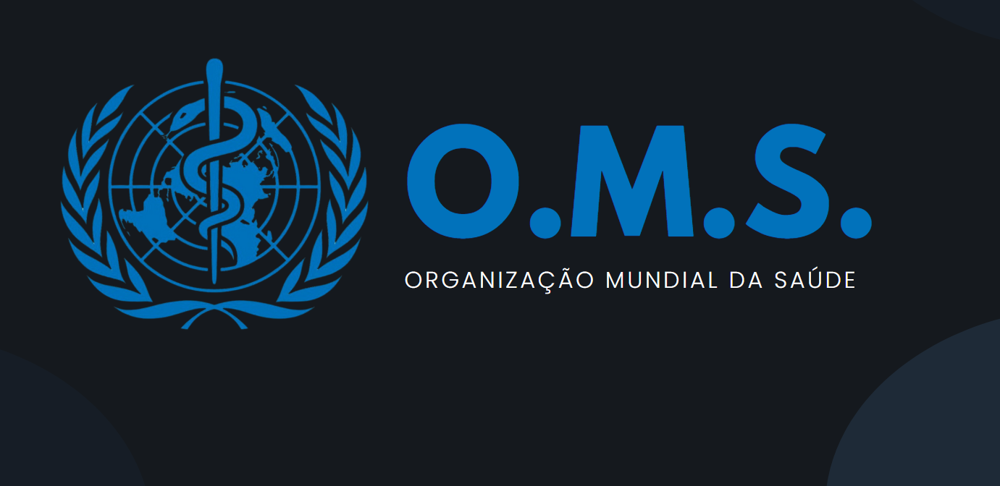
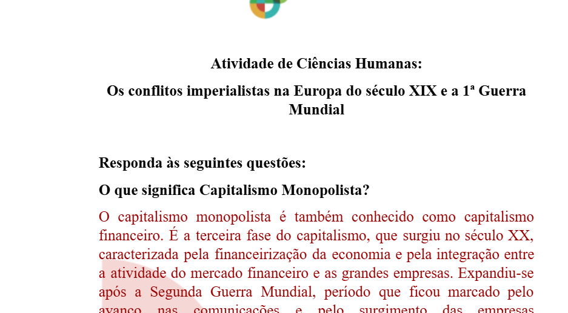
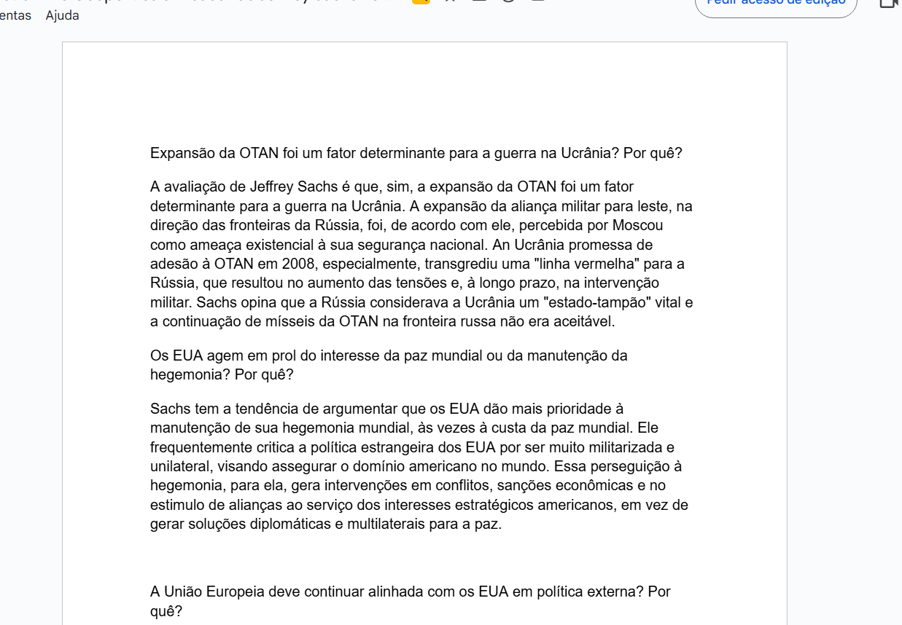
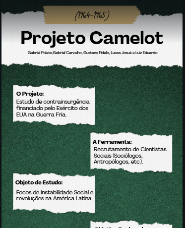
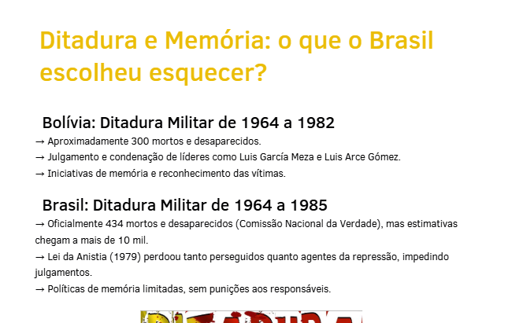

Matéria
Nesse dia, finalizamos as apresentações do Seminário de Geopolítica, lemos sobre conceitos geopolíticos na GeekieOne, pesquisamos sobre organismos internacionais e concluímos com a exibição e discussão de um vídeo do canal Plano Piloto. (C2, H8, H10 & H12) Link
Nessa aula, realizamos uma atividade sobre os conflitos imperialistas na Europa do século XIX e a Primeira Guerra Mundial. Respondemos questões teóricas sobre o Capitalismo Monopolista, a Grande Depressão de 1873 a 1896, o Imperialismo e a Conferência de Berlim. Em seguida, completamos uma tabela com os objetivos e áreas de influência dos principais países imperialistas europeus. Por fim, em grupos, iniciamos a criação de uma apresentação em slides sobre um dos países da tabela, explorando seu papel na corrida imperialista. Link
Nessas aulas, estudamos o nazifascismo e os regimes totalitários com apoio da GeekieOne, vídeos e materiais extras. Em grupos, analisamos filmes que mostrassem práticas totalitárias e apresentamos suas relações com o conteúdo. Também realizamos atividades e revisões do capítulo, além de analisar a arquitetura do 3º Reich, identificando elementos que transmitiam ideais nazifascistas. Link
Nesta aula, assistimos ao vídeo do economista e conselheiro de estado Jeffrey Sachs, dividido em dois períodos, sobre o estilo de política externa dos Estados Unidos. Em seguida, realizamos em grupos de até quatro integrantes um questionário para refletir e responder sobre os principais pontos abordados. Link
Nesta aula, iniciamos a produção de um **dossiê colaborativo sobre os presidentes do Brasil entre 1894 e 1930**. Cada grupo ficou responsável por pesquisar um presidente desse período, reunindo dados e informações relevantes. Paralelamente, um grupo de três alunos elaborou, no **Canva**, o layout do dossiê com a identidade da turma. Após a finalização do layout, todas as equipes organizaram suas pesquisas no modelo criado, garantindo que o material ficasse padronizado, bem estruturado e em ordem. Link
Nesta atividade tivemos que compreender os diversos mecanismos econômicos, midiáticos, militares e de inteligência utilizados pelos Estados Unidos para influenciar e apoiar ativamente a deposição de João Goulart e a instauração do regime militar no Brasil em 1964. (C2, H10, C3, H20, C4, H21, H27, C5, H30, C6, H39, H40) Link
Nesta atividade tivemos que pesquisar a Lei da Anistia de 1979 e o processo de redemocratização no Brasil, as políticas de memória, verdade e justiça em diferentes países da América Latina. (H4, H10, H39) Link
Nessa atividade ficamos responsáveis pela construção de uma nova capital para o Brasil, Criamos a Campina Final do Sul que fica logo abaixo de Mato Grosso.